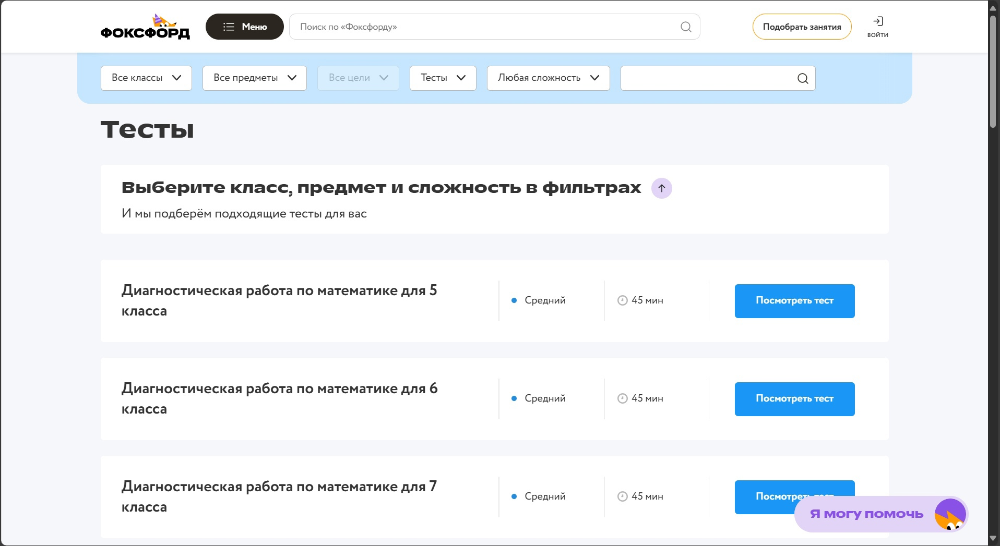

Чтобы было легче находить всю информацию, здесь показано где она находится в лёгком доступе.
Таким образом, можно найти готовые тесты и использовать их для проверки знаний школьников по выбранной теме.
